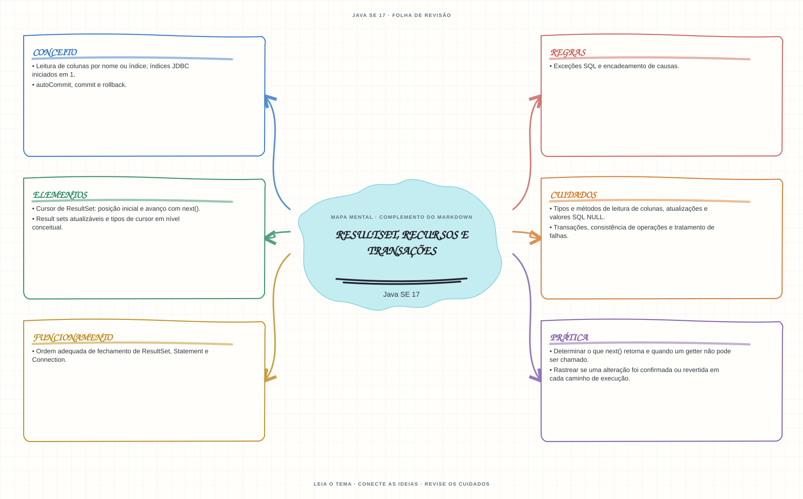

Ver mapa mental deste assuntoLer resultados respeitando o cursor e identificar quando a transação foi confirmada ou revertida.
Aprofundamento e revisão 1Z0-829: use esta página depois dos fundamentos. Os tópicos de prova complementam a trilha inicial e não são pré-requisitos para começar a programar.
- Leia o objetivo e localize a ideia principal no conteúdo abaixo.
- Preveja o resultado, compile e execute o exemplo.
- Faça a atividade sem copiar a solução e confira a checagem comentada.
EXEMPLO DE CONSOLE
Veja a regra em execução
Antes de executar, anote sua previsão. Compile o exemplo com o JDK e compare a saída observada com as regras deste assunto.
Comandos para compilar e executar
javac -d target/bin src/10-jdbc/resultset-recursos-e-transacoes/ResultSetRecursosETransacoesExample.java
java -cp target/bin ResultSetRecursosETransacoesExampleEste exemplo JDBC também precisa de uma URL de conexão e do driver do banco no classpath.
Consultar código-fonte: ResultSetRecursosETransacoesExample.java
import java.sql.Connection;
import java.sql.DriverManager;
import java.sql.PreparedStatement;
import java.sql.ResultSet;
import java.sql.SQLException;
public class ResultSetRecursosETransacoesExample {
public static void main(String[] args) throws SQLException {
System.out.println("=== JDBC: ResultSet e transacoes ===");
if (args.length == 0) {
System.out.println("Uso: java ResultSetRecursosETransacoesExample <jdbc-url>");
System.out.println("O exemplo usa SELECT 1; informe uma URL JDBC e inclua o driver do banco.");
return;
}
try (Connection conexao = DriverManager.getConnection(args[0])) {
conexao.setAutoCommit(false);
System.out.println("autoCommit desativado: a aplicacao controla a transacao.");
try (PreparedStatement comando = conexao.prepareStatement("SELECT 1");
ResultSet resultados = comando.executeQuery()) {
if (resultados.next()) {
System.out.println("next() avanca o cursor; valor da coluna 1: "
+ resultados.getInt(1));
}
conexao.commit();
System.out.println("commit() confirma a transacao.");
} catch (SQLException excecao) {
try {
conexao.rollback();
} catch (SQLException falhaNoRollback) {
excecao.addSuppressed(falhaNoRollback);
}
System.out.println("rollback() tentou reverter a transacao.");
throw excecao;
}
}
}
}
PRATIQUE AGORA
Faça uma pequena alteração por conta própria
Percorra um ResultSet chamando next() antes de ler cada coluna e confirme ou reverta uma transação.
Concluído quando: o programa compilar, produzir o resultado esperado e você conseguir explicar a regra aplicada.
CHECAGEM RÁPIDA · ResultSet, recursos e transações
Onde começa o cursor de um ResultSet e o que fazer antes de ler uma linha?
Conferir resposta comentada
Antes da primeira linha. Chame next() e leia colunas somente quando o método retornar true; confirme ou reverta a transação conforme o resultado.
Estude
- Cursor de
ResultSet: posição inicial e avanço comnext(). - Leitura de colunas por nome ou índice; índices JDBC iniciados em 1.
- Tipos e métodos de leitura de colunas, atualizações e valores SQL
NULL. - Result sets atualizáveis e tipos de cursor em nível conceitual.
autoCommit,commiterollback.- Transações, consistência de operações e tratamento de falhas.
- Ordem adequada de fechamento de
ResultSet,StatementeConnection. - Exceções SQL e encadeamento de causas.
Verifique se consegue
- Determinar o que
next()retorna e quando um getter não pode ser chamado. - Rastrear se uma alteração foi confirmada ou revertida em cada caminho de execução.
Como este capítulo se relaciona com cada exame
Conceitos JDBC podem ser úteis; confirme se estão no escopo do exame escolhido.
Base de estudo deste portal; confirme o mapeamento com o blueprint vigente.
Conceitos úteis; confirme driver, APIs e objetivos do exame Java 21.
Orientação editorial sobre reaproveitamento do material; não representa objetivos oficiais nem garante cobertura do exame. Consulte o comparativo e as fontes da Oracle.